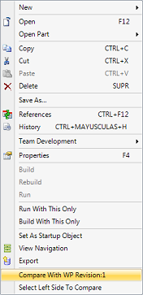

The purpose of this document is to show how to compare the last revision of two objects of the same Knowledge Base. There are two ways of comparing objects, both can be used from the KB Explorer and from the Work With Objects dialog.
Note: These options will be available at the contextual menu, when selecting an object and right clicking on it. Option 1Select Left Side To CompareThis option is used to select the object for the left side of the comparer:
After this option is used the Compare With option will be available at the contextual menu for objects of the same type. Compare WithThis option is enabled after using the Select Left Side To Compare if the object has the same type of the one previously selected:  When this option is selected the comparer will be opened. Option 2Compare selected objectsThis option is used to compare differences between two objects. It is used by selecting an object from the Folder View (or from the Work With Attributes dialog), then pressing the CTRL key and selecting another object of the same type. This will make the Compare Selected Objects option available on the menu:
When the comparer is opened the two objects are compared:
See also
Form and layout comparer
|
| Backlinks | |
| Form and layout comparer | Getting ready for Right-to-Left Development |